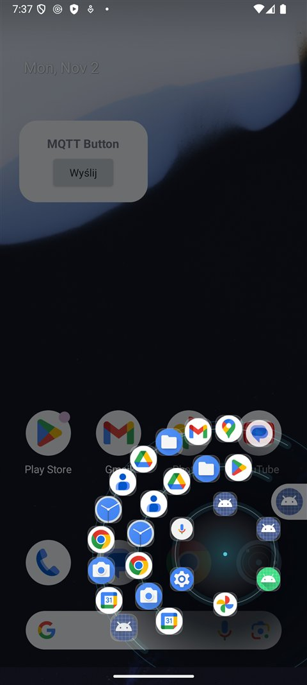

Twoje aplikacje
pod kciukiem
Nakładka systemowa na Androida. Przeciągnij po przekątnej z prawego dolnego rogu — otworzy się orbita z trzema obracającymi się pierścieniami ikon. Bez szukania po szufladach.

Co robi
Wachlarz pierścieni zaprojektowany pod obsługę jedną ręką — wszystko w zasięgu kciuka.
Gest po przekątnej
Przeciągnięcie z uchwytu w prawym dolnym rogu otwiera orbitę. Tapnięcie uchwytu też działa.
Trzy pierścienie
Wewnętrzny to najczęściej używane aplikacje, środkowy kolejne, a zewnętrzny pełny alfabetyczny indeks.
Pęd ruletki
Szarpnij pierścień — kręci się dalej, wyhamowuje tarciem i ląduje równo na slocie. Haptyk tyka przy każdej ikonie.
Kalibracja kciuka
Kreator mierzy, gdzie realnie sięgasz, i dopasowuje promienie pierścieni, łuk oraz rozmiar ikon.
Ciemna otoczka
Pod orbitą pojawia się ciemny krąg, więc ikony są czytelne nawet na jasnej tapiecie.
Dwa tryby
Nakładka (rysowanie nad aplikacjami) albo usługa dostępności — bez uprawnienia nakładki.
Instalacja
Aplikacja nie jest w Google Play — instalujesz plik APK bezpośrednio.
- Pobierz plik android-orbit-1.5.apk na telefon (albo pobierz na komputer i prześlij).
- Otwórz plik. System zapyta o zgodę na instalację z tego źródła — zezwól (Ustawienia → Aplikacje → Specjalny dostęp → Instalowanie nieznanych aplikacji).
- Uruchom Android Orbit i przyznaj rysowanie nad innymi aplikacjami. Opcjonalnie: statystyki użycia i powiadomienia.
- Naciśnij Uruchom orbitę, wróć na ekran główny i przeciągnij po przekątnej z prawego dolnego rogu.
- Dla lepszego dopasowania wejdź w Kalibracja kciuka i przejedź kciukiem po każdym pierścieniu.
Niektóre telefony (Xiaomi, Huawei, Samsung, Oppo) dodatkowo wymagają włączenia autostartu i wyłączenia optymalizacji baterii dla tej aplikacji — inaczej usługa może zostać zatrzymana w tle.
Plik do pobrania
Sprawdź sumę kontrolną, jeśli chcesz mieć pewność, że plik dotarł w całości.
| Plik | android-orbit-1.5.apk |
| Wersja | 1.5 (versionCode 6) |
| Rozmiar | 1 657 040 bajtów |
| Wymagania | Android 8.0 (API 26) lub nowszy · target API 35 |
| Podpis | SHA-256 certyfikatu21541970a8eb0d8d76d822379b5cb6e2094e9593fb60a02c39f232e9d83593ae |
| SHA-256 pliku | D818A5CFBDAEB32DE96CE6D1773390EA31F248F2E001C89CFB9C45EDC83D8574 |
Uprawnienia: nakładka (wyświetlanie nad innymi aplikacjami), opcjonalnie statystyki użycia i powiadomienia. Aplikacja nie ma uprawnienia do internetu — nie wysyła żadnych danych.
Pytania
Czy to działa bez roota?
Tak. Wystarczy zwykłe uprawnienie „rysowanie nad innymi aplikacjami” albo usługa dostępności.
Dlaczego gest startuje z uchwytu, a nie z dowolnego miejsca ekranu?
Android nie pozwala nakładkom nasłuchiwać dotknięć w całym systemie — przechwyciłoby to też dotknięcia w aplikacjach. Uchwyt przy krawędzi jest kompromisem: pewny, tani i nie koliduje z gestami systemowymi.
Czy zbiera dane?
Nie. Lista aplikacji, statystyki użycia i ustawienia zostają na urządzeniu. Brak dostępu do internetu.
Jak zaktualizować do nowszej wersji?
Zainstaluj nowszy APK na wierzch — podpis jest ten sam, więc dane i ustawienia zostaną zachowane.
Ikony w środku i na zewnątrz się powtarzają — czy tak ma być?
Tak: wewnętrzne pierścienie to skróty do najczęściej używanych aplikacji, a zewnętrzny to pełny indeks. W ustawieniach możesz wyłączyć opcję „Zewnętrzny pierścień: wszystkie aplikacje”.